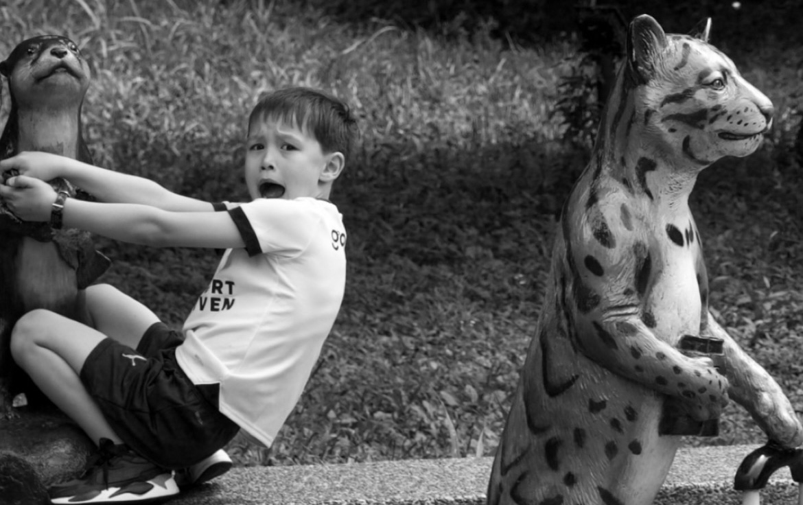

會動的靜態攝影
賦予照片故事的學習
此次在木柵動物園的外拍將視角聚焦於雕像
想藉由這次機會練習如何賦予相片中的事物生命力
並讓人對畫面有所想像

這次外拍的動機源自於希望能捕捉到人們與動物雕像之間那純真而富有想像力的互動，理念在於通過相片讓人們看到雕像不僅僅是靜物，而是具有生命力的存在，起初我以為只是簡單的拍攝，但實際操作中，發現如何在靜態的雕像與充滿活力的孩子之間創造生動的畫面，並賦予照片情感，成為了一大挑戰。
拍攝過程中遇到的主要問題在於如何捕捉孩子自然流露的表情和動作，以及如何將這些瞬間與動物雕像巧妙結合，形成和諧的畫面，學會了如何強調孩子與雕像之間的互動，使照片更具故事性，攝影不僅僅是技術的展現，更是對細節與情感的補捉，透過相機鏡頭，能夠賦予靜物生命力，讓觀者在畫面中感受到無限的想像與情感共鳴。